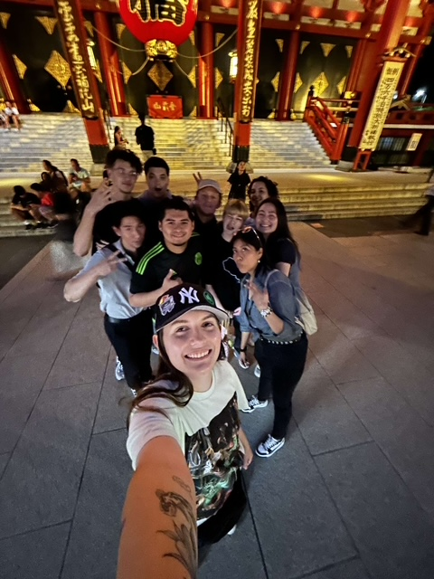

Eastern Asia Tips and Info

Hi there! My name is Alex Sifuentes and wanted to share my personal experience traveling to parts of Eastern Asia. I have been to Japan twice, the first time participating on a Summer GLINT Internship with CIEE in partnership with ASU and other universites around the country, and the second time visiting just for vaction. During my first trip to Japan I gained cultural knowledge, as well as international working experience and gained a real-time simulation experience to what it is like to be a foreign worker in Japan. I have met new and wonderful friends during my time in Japan, which in turn had me interested to go to Japan again for vacation. I experienced going on the bullet train (Shinkansen) and the local trains in Tokyo, which can be very stressful attempting to hop on the train during peak hours when everyone is either heading to work or trying to go home and the train is completely packed. During my second time in Japan, I decided to go to South Korea for a day to have a taste on what I should expect when I visit there a longer period of time in the future. On this trip, I just wanted to go to places I wasn't able to go the first Japan trip due to the classes I had at Sophia University in Yotsuya and my job. Overall I learned a lot about two of these countries and what to do, proper ettiquite and cultural differences that may be normal in America, but deemed frowned upon or rude in Japan/South Korea.
